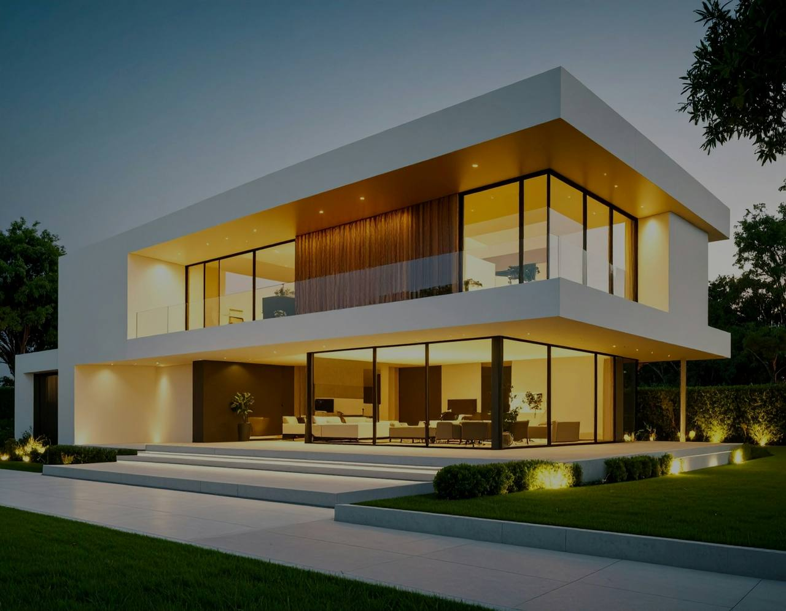
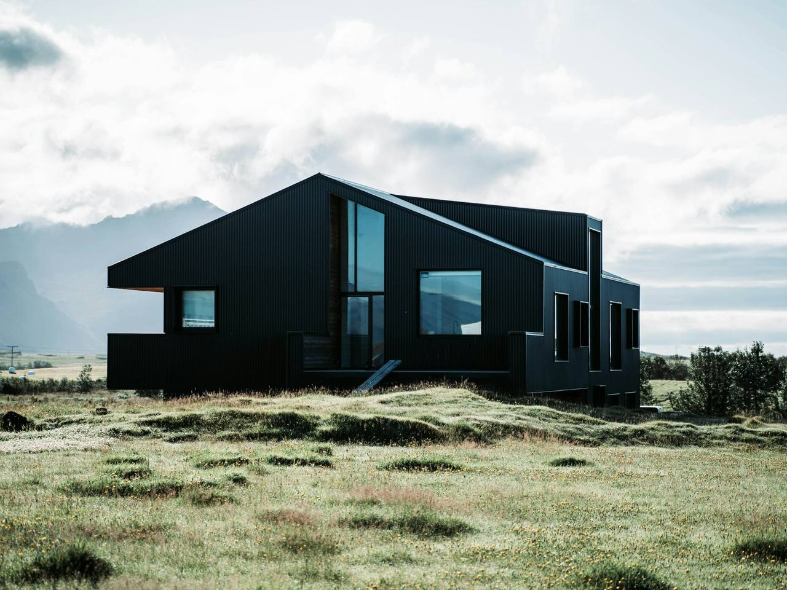
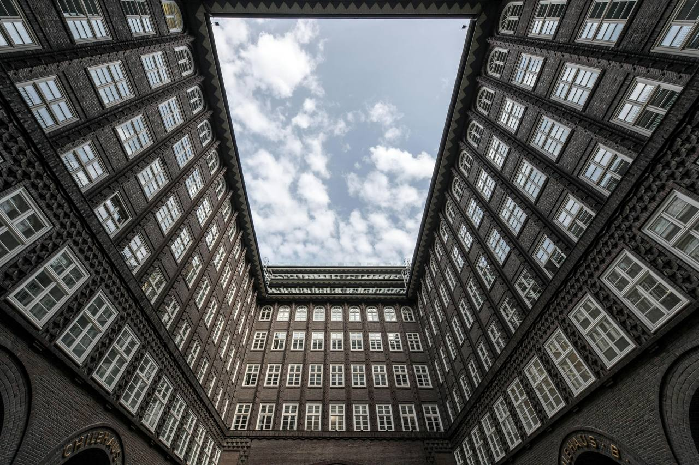
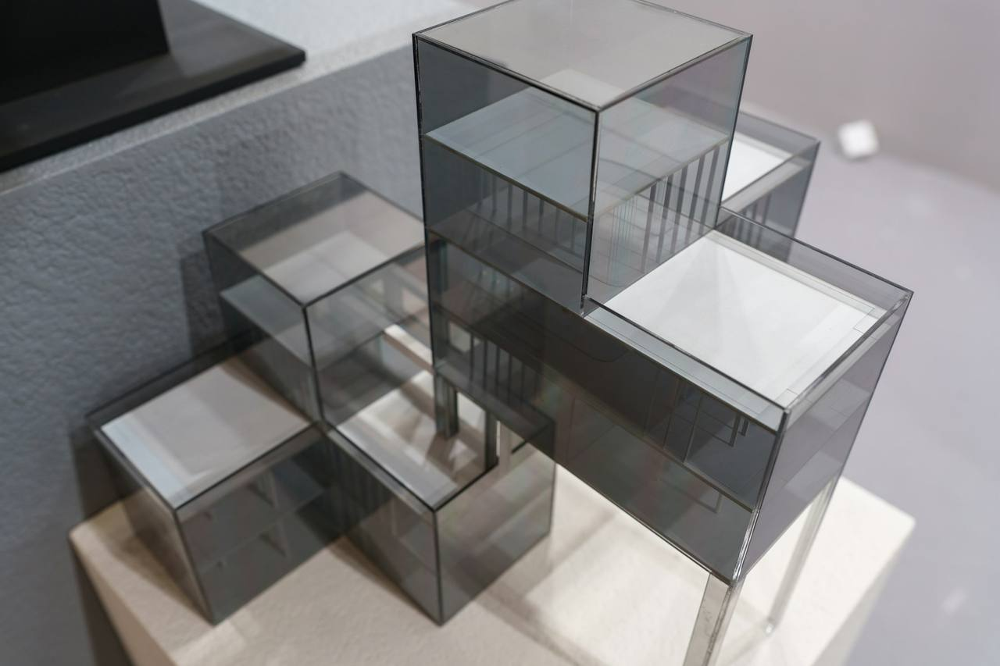

Architecture shaped by its place. Homes, accommodation and workplaces, made slowly for the light and weather of Aotearoa.
The studio
Buildings that belong.
Most buildings are photographed once, at their best hour, and never quite belong to their street again. We are interested in the other thing: houses that settle into their ground, workplaces their neighbourhoods, guesthouses their vineyards, until the place is hard to imagine without them.
So each commission begins in the field, not on the screen. We walk the site at the hours the rooms will be used, watch where the water goes and the wind is born, and draw only what the ground will honestly carry. Materials come from the same discipline: stone from the nearest cut, earth from the excavation, timber that will silver rather than fail.
The work is contemporary but not novelty; quiet but never indifferent. Clients come to us to build once, and well.
Selected work
01 · 03
Walls of rammed earth from the vineyard's own excavation fold around a courtyard of still water, storing the heat of the summer for the frost beyond it.
View the project
The pavilion study
04 · Study models


The pavilion settles on its basalt pad; the screens close against the north-wester and the ground contours run past it.
Every practice carries a question it returns to. Ours is drawn here: how little can a building be and still shelter well? One pad, one glazed room, one roof plane, screens where the wind wants a wall. The same three questions open every commission.
Approach
We build with the site, not on it.
Survey before sketch. The plan is set to hold the winter sun and turn its back to the south-wester. What cannot be answered by orientation is answered by mass, and what cannot be answered by mass is answered by a screen that opens.
The proof, we think, is in the second decade: gardens grown, timber silvered, rooms still used the way the drawings promised.
Four principles · a ten minute read
Journal
Notes from the ground.
Occasional writing on site, weather, material and the long life of buildings. Published when there is something worth saying, not because a calendar said so.
Commissions
Every building begins with a conversation on site.
Tell us about your ground, your brief, and the hours of light you care about most. We take a small number of commissions each year and give each one a director's full attention.
Begin an enquiry